1.11. 集成方法¶
集成方法结合不同分类器的预测结果， 这些分类器分别来自于不同的学习算法， 相比于单一分类器以提高分类器的泛化/健壮性。
集成方法通常分为两类：
在 一般方法 中，方法的原理是使用若干个独立的分类器， 然后取这若干个分类器的平均结果作为集合方法结果。 一般情况下，集成分类器（the combined estimator）通常优于它包含的单个 分类器的效果，因为它的方差更小。
Examples: Bagging methods, Forests of randomized trees, ...
相比之下，在 boosting 方法中，基础分类器（base estimators）按顺序创建 然后试图减少合成分类器的bias。依据是将若干个弱模型结合产生强集成（分类器）。
Examples: AdaBoost, Gradient Tree Boosting, ...
1.11.1. Bagging meta-estimator¶
在集成算法中，bagging方法形成一个新的算法， 它基于一些原训练集的子集训练出的若干分类器。 然后把这些分类器的预测结果组合成最终预测结果。 这些方法通常用来减小基分类器的方差（例如决策树）， 通过把construction procedure随机化，然后在外部进行集成。 在大部分情况下，bagging是一个非常简单， 相对于单一模型提升效果的方法，并且跟基算法无关。 由于bagging也是一种能减少过拟合的算法， 所以它能在复杂模型的情况下很有效（e.g., fully developed decision trees)， 例如boosting方法通常只能在弱模型下效果比较好(e.g.,shallow decision trees)。
Bagging方法有很多种，但不同的地方主要在于 他们从训练集中得到随机子集的方式不同。
In scikit-learn, bagging methods are offered as a unified
BaggingClassifier meta-estimator (resp. BaggingRegressor),
taking as input a user-specified base estimator along with parameters
specifying the strategy to draw random subsets. In particular, max_samples
and max_features control the size of the subsets (in terms of samples and
features), while bootstrap and bootstrap_features control whether
samples and features are drawn with or without replacement. When using a subset
of the available samples the generalization error can be estimated with the
out-of-bag samples by setting oob_score=True. As an example, the
snippet below illustrates how to instantiate a bagging ensemble of
KNeighborsClassifier base estimators, each built on random subsets of
50% of the samples and 50% of the features.
>>> from sklearn.ensemble import BaggingClassifier
>>> from sklearn.neighbors import KNeighborsClassifier
>>> bagging = BaggingClassifier(KNeighborsClassifier(),
... max_samples=0.5, max_features=0.5)
References
| [B1999] | L. Breiman, “Pasting small votes for classification in large databases and on-line”, Machine Learning, 36(1), 85-103, 1999. |
| [B1996] | L. Breiman, “Bagging predictors”, Machine Learning, 24(2), 123-140, 1996. |
| [H1998] | T. Ho, “The random subspace method for constructing decision forests”, Pattern Analysis and Machine Intelligence, 20(8), 832-844, 1998. |
| [LG2012] | G. Louppe and P. Geurts, “Ensembles on Random Patches”, Machine Learning and Knowledge Discovery in Databases, 346-361, 2012. |
1.11.2. Forests of randomized trees¶
The sklearn.ensemble module includes two averaging algorithms based
on randomized decision trees: the RandomForest algorithm
and the Extra-Trees method. Both algorithms are perturb-and-combine
techniques [B1998] specifically designed for trees. This means a diverse
set of classifiers is created by introducing randomness in the classifier
construction. The prediction of the ensemble is given as the averaged
prediction of the individual classifiers.
As other classifiers, forest classifiers have to be fitted with two
arrays: a sparse or dense array X of size [n_samples, n_features] holding the
training samples, and an array Y of size [n_samples] holding the
target values (class labels) for the training samples:
>>> from sklearn.ensemble import RandomForestClassifier
>>> X = [[0, 0], [1, 1]]
>>> Y = [0, 1]
>>> clf = RandomForestClassifier(n_estimators=10)
>>> clf = clf.fit(X, Y)
Like decision trees, forests of trees also extend
to multi-output problems (if Y is an array of size
[n_samples, n_outputs]).
1.11.2.1. Random Forests¶
In random forests (see RandomForestClassifier and
RandomForestRegressor classes), each tree in the ensemble is
built from a sample drawn with replacement (i.e., a bootstrap sample)
from the training set. In addition, when splitting a node during the
construction of the tree, the split that is chosen is no longer the
best split among all features. Instead, the split that is picked is the
best split among a random subset of the features. As a result of this
randomness, the bias of the forest usually slightly increases (with
respect to the bias of a single non-random tree) but, due to averaging,
its variance also decreases, usually more than compensating for the
increase in bias, hence yielding an overall better model.
In contrast to the original publication [B2001], the scikit-learn implementation combines classifiers by averaging their probabilistic prediction, instead of letting each classifier vote for a single class.
1.11.2.2. Extremely Randomized Trees¶
In extremely randomized trees (see ExtraTreesClassifier
and ExtraTreesRegressor classes), randomness goes one step
further in the way splits are computed. As in random forests, a random
subset of candidate features is used, but instead of looking for the
most discriminative thresholds, thresholds are drawn at random for each
candidate feature and the best of these randomly-generated thresholds is
picked as the splitting rule. This usually allows to reduce the variance
of the model a bit more, at the expense of a slightly greater increase
in bias:
>>> from sklearn.cross_validation import cross_val_score
>>> from sklearn.datasets import make_blobs
>>> from sklearn.ensemble import RandomForestClassifier
>>> from sklearn.ensemble import ExtraTreesClassifier
>>> from sklearn.tree import DecisionTreeClassifier
>>> X, y = make_blobs(n_samples=10000, n_features=10, centers=100,
... random_state=0)
>>> clf = DecisionTreeClassifier(max_depth=None, min_samples_split=1,
... random_state=0)
>>> scores = cross_val_score(clf, X, y)
>>> scores.mean()
0.97...
>>> clf = RandomForestClassifier(n_estimators=10, max_depth=None,
... min_samples_split=1, random_state=0)
>>> scores = cross_val_score(clf, X, y)
>>> scores.mean()
0.999...
>>> clf = ExtraTreesClassifier(n_estimators=10, max_depth=None,
... min_samples_split=1, random_state=0)
>>> scores = cross_val_score(clf, X, y)
>>> scores.mean() > 0.999
True
1.11.2.3. Parameters¶
The main parameters to adjust when using these methods is n_estimators
and max_features. The former is the number of trees in the forest. The
larger the better, but also the longer it will take to compute. In
addition, note that results will stop getting significantly better
beyond a critical number of trees. The latter is the size of the random
subsets of features to consider when splitting a node. The lower the
greater the reduction of variance, but also the greater the increase in
bias. Empirical good default values are max_features=n_features
for regression problems, and max_features=sqrt(n_features) for
classification tasks (where n_features is the number of features
in the data). Good results are often achieved when setting max_depth=None
in combination with min_samples_split=1 (i.e., when fully developing the
trees). Bear in mind though that these values are usually not optimal, and
might result in models that consume a lot of ram. The best parameter values
should always be cross-validated. In addition, note that in random forests,
bootstrap samples are used by default (bootstrap=True)
while the default strategy for extra-trees is to use the whole dataset
(bootstrap=False).
When using bootstrap sampling the generalization error can be estimated
on the left out or out-of-bag samples. This can be enabled by
setting oob_score=True.
1.11.2.4. Parallelization¶
Finally, this module also features the parallel construction of the trees
and the parallel computation of the predictions through the n_jobs
parameter. If n_jobs=k then computations are partitioned into
k jobs, and run on k cores of the machine. If n_jobs=-1
then all cores available on the machine are used. Note that because of
inter-process communication overhead, the speedup might not be linear
(i.e., using k jobs will unfortunately not be k times as
fast). Significant speedup can still be achieved though when building
a large number of trees, or when building a single tree requires a fair
amount of time (e.g., on large datasets).
Examples:
1.11.2.5. Feature importance evaluation¶
The relative rank (i.e. depth) of a feature used as a decision node in a tree can be used to assess the relative importance of that feature with respect to the predictability of the target variable. Features used at the top of the tree are used contribute to the final prediction decision of a larger fraction of the input samples. The expected fraction of the samples they contribute to can thus be used as an estimate of the relative importance of the features.
By averaging those expected activity rates over several randomized trees one can reduce the variance of such an estimate and use it for feature selection.
The following example shows a color-coded representation of the relative
importances of each individual pixel for a face recognition task using
a ExtraTreesClassifier model.
In practice those estimates are stored as an attribute named
feature_importances_ on the fitted model. This is an array with shape
(n_features,) whose values are positive and sum to 1.0. The higher
the value, the more important is the contribution of the matching feature
to the prediction function.
1.11.2.6. Totally Random Trees Embedding¶
RandomTreesEmbedding implements an unsupervised transformation of the
data. Using a forest of completely random trees, RandomTreesEmbedding
encodes the data by the indices of the leaves a data point ends up in. This
index is then encoded in a one-of-K manner, leading to a high dimensional,
sparse binary coding.
This coding can be computed very efficiently and can then be used as a basis
for other learning tasks.
The size and sparsity of the code can be influenced by choosing the number of
trees and the maximum depth per tree. For each tree in the ensemble, the coding
contains one entry of one. The size of the coding is at most n_estimators * 2
** max_depth, the maximum number of leaves in the forest.
As neighboring data points are more likely to lie within the same leaf of a tree, the transformation performs an implicit, non-parametric density estimation.
Examples:
- Hashing feature transformation using Totally Random Trees
- Manifold learning on handwritten digits: Locally Linear Embedding, Isomap... compares non-linear dimensionality reduction techniques on handwritten digits.
- Feature transformations with ensembles of trees compares supervised and unsupervised tree based feature transformations.
See also
Manifold learning techniques can also be useful to derive non-linear representations of feature space, also these approaches focus also on dimensionality reduction.
1.11.3. AdaBoost¶
The module sklearn.ensemble includes the popular boosting algorithm
AdaBoost, introduced in 1995 by Freund and Schapire [FS1995].
The core principle of AdaBoost is to fit a sequence of weak learners (i.e., models that are only slightly better than random guessing, such as small decision trees) on repeatedly modified versions of the data. The predictions from all of them are then combined through a weighted majority vote (or sum) to produce the final prediction. The data modifications at each so-called boosting iteration consist of applying weights 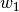, 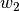, ..., 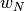 to each of the training samples. Initially, those weights are all set to 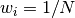, so that the first step simply trains a weak learner on the original data. For each successive iteration, the sample weights are individually modified and the learning algorithm is reapplied to the reweighted data. At a given step, those training examples that were incorrectly predicted by the boosted model induced at the previous step have their weights increased, whereas the weights are decreased for those that were predicted correctly. As iterations proceed, examples that are difficult to predict receive ever-increasing influence. Each subsequent weak learner is thereby forced to concentrate on the examples that are missed by the previous ones in the sequence [HTF].

AdaBoost can be used both for classification and regression problems:
- For multi-class classification,
AdaBoostClassifierimplements AdaBoost-SAMME and AdaBoost-SAMME.R [ZZRH2009].- For regression,
AdaBoostRegressorimplements AdaBoost.R2 [D1997].
1.11.3.1. Usage¶
The following example shows how to fit an AdaBoost classifier with 100 weak learners:
>>> from sklearn.cross_validation import cross_val_score
>>> from sklearn.datasets import load_iris
>>> from sklearn.ensemble import AdaBoostClassifier
>>> iris = load_iris()
>>> clf = AdaBoostClassifier(n_estimators=100)
>>> scores = cross_val_score(clf, iris.data, iris.target)
>>> scores.mean()
0.9...
The number of weak learners is controlled by the parameter n_estimators. The
learning_rate parameter controls the contribution of the weak learners in
the final combination. By default, weak learners are decision stumps. Different
weak learners can be specified through the base_estimator parameter.
The main parameters to tune to obtain good results are n_estimators and
the complexity of the base estimators (e.g., its depth max_depth or
minimum required number of samples at a leaf min_samples_leaf in case of
decision trees).
Examples:
- Discrete versus Real AdaBoost compares the classification error of a decision stump, decision tree, and a boosted decision stump using AdaBoost-SAMME and AdaBoost-SAMME.R.
- Multi-class AdaBoosted Decision Trees shows the performance of AdaBoost-SAMME and AdaBoost-SAMME.R on a multi-class problem.
- Two-class AdaBoost shows the decision boundary and decision function values for a non-linearly separable two-class problem using AdaBoost-SAMME.
- Decision Tree Regression with AdaBoost demonstrates regression with the AdaBoost.R2 algorithm.
References
| [FS1995] | Y. Freund, and R. Schapire, “A Decision-Theoretic Generalization of On-Line Learning and an Application to Boosting”, 1997. |
| [ZZRH2009] | J. Zhu, H. Zou, S. Rosset, T. Hastie. “Multi-class AdaBoost”, 2009. |
| [D1997] |
|
| [HTF] | T. Hastie, R. Tibshirani and J. Friedman, “Elements of Statistical Learning Ed. 2”, Springer, 2009. |
1.11.4. Gradient Tree Boosting¶
Gradient Tree Boosting or Gradient Boosted Regression Trees (GBRT) is a generalization of boosting to arbitrary differentiable loss functions. GBRT is an accurate and effective off-the-shelf procedure that can be used for both regression and classification problems. Gradient Tree Boosting models are used in a variety of areas including Web search ranking and ecology.
The advantages of GBRT are:
- Natural handling of data of mixed type (= heterogeneous features)
- Predictive power
- Robustness to outliers in output space (via robust loss functions)
The disadvantages of GBRT are:
- Scalability, due to the sequential nature of boosting it can hardly be parallelized.
The module sklearn.ensemble provides methods
for both classification and regression via gradient boosted regression
trees.
1.11.4.1. Classification¶
GradientBoostingClassifier supports both binary and multi-class
classification.
The following example shows how to fit a gradient boosting classifier
with 100 decision stumps as weak learners:
>>> from sklearn.datasets import make_hastie_10_2
>>> from sklearn.ensemble import GradientBoostingClassifier
>>> X, y = make_hastie_10_2(random_state=0)
>>> X_train, X_test = X[:2000], X[2000:]
>>> y_train, y_test = y[:2000], y[2000:]
>>> clf = GradientBoostingClassifier(n_estimators=100, learning_rate=1.0,
... max_depth=1, random_state=0).fit(X_train, y_train)
>>> clf.score(X_test, y_test)
0.913...
The number of weak learners (i.e. regression trees) is controlled by the parameter n_estimators; The size of each tree can be controlled either by setting the tree depth via max_depth or by setting the number of leaf nodes via max_leaf_nodes. The learning_rate is a hyper-parameter in the range (0.0, 1.0] that controls overfitting via shrinkage .
Note
Classification with more than 2 classes requires the induction
of n_classes regression trees at each at each iteration,
thus, the total number of induced trees equals
n_classes * n_estimators. For datasets with a large number
of classes we strongly recommend to use
RandomForestClassifier as an alternative to GradientBoostingClassifier .
1.11.4.2. Regression¶
GradientBoostingRegressor supports a number of
different loss functions
for regression which can be specified via the argument
loss; the default loss function for regression is least squares ('ls').
>>> import numpy as np
>>> from sklearn.metrics import mean_squared_error
>>> from sklearn.datasets import make_friedman1
>>> from sklearn.ensemble import GradientBoostingRegressor
>>> X, y = make_friedman1(n_samples=1200, random_state=0, noise=1.0)
>>> X_train, X_test = X[:200], X[200:]
>>> y_train, y_test = y[:200], y[200:]
>>> est = GradientBoostingRegressor(n_estimators=100, learning_rate=0.1,
... max_depth=1, random_state=0, loss='ls').fit(X_train, y_train)
>>> mean_squared_error(y_test, est.predict(X_test))
5.00...
The figure below shows the results of applying GradientBoostingRegressor
with least squares loss and 500 base learners to the Boston house price dataset
(sklearn.datasets.load_boston).
The plot on the left shows the train and test error at each iteration.
The train error at each iteration is stored in the
train_score_ attribute
of the gradient boosting model. The test error at each iterations can be obtained
via the staged_predict method which returns a
generator that yields the predictions at each stage. Plots like these can be used
to determine the optimal number of trees (i.e. n_estimators) by early stopping.
The plot on the right shows the feature importances which can be obtained via
the feature_importances_ property.

1.11.4.3. Fitting additional weak-learners¶
Both GradientBoostingRegressor and GradientBoostingClassifier
support warm_start=True which allows you to add more estimators to an already
fitted model.
>>> _ = est.set_params(n_estimators=200, warm_start=True) # set warm_start and new nr of trees
>>> _ = est.fit(X_train, y_train) # fit additional 100 trees to est
>>> mean_squared_error(y_test, est.predict(X_test))
3.84...
1.11.4.4. Controlling the tree size¶
The size of the regression tree base learners defines the level of variable
interactions that can be captured by the gradient boosting model. In general,
a tree of depth h can capture interactions of order h .
There are two ways in which the size of the individual regression trees can
be controlled.
If you specify max_depth=h then complete binary trees
of depth h will be grown. Such trees will have (at most) 2**h leaf nodes
and 2**h - 1 split nodes.
Alternatively, you can control the tree size by specifying the number of
leaf nodes via the parameter max_leaf_nodes. In this case,
trees will be grown using best-first search where nodes with the highest improvement
in impurity will be expanded first.
A tree with max_leaf_nodes=k has k - 1 split nodes and thus can
model interactions of up to order max_leaf_nodes - 1 .
We found that max_leaf_nodes=k gives comparable results to max_depth=k-1
but is significantly faster to train at the expense of a slightly higher
training error.
The parameter max_leaf_nodes corresponds to the variable J in the
chapter on gradient boosting in [F2001] and is related to the parameter
interaction.depth in R’s gbm package where max_leaf_nodes == interaction.depth + 1 .
1.11.4.5. Mathematical formulation¶
GBRT considers additive models of the following form:
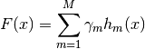
where 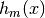 are the basis functions which are usually called weak learners in the context of boosting. Gradient Tree Boosting uses decision trees of fixed size as weak learners. Decision trees have a number of abilities that make them valuable for boosting, namely the ability to handle data of mixed type and the ability to model complex functions.
Similar to other boosting algorithms GBRT builds the additive model in a forward stagewise fashion:
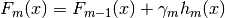
At each stage the decision tree is chosen to
minimize the loss function  given the current model
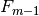 and its fit
given the current model
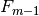 and its fit 
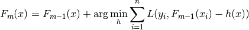
The initial model 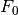 is problem specific, for least-squares regression one usually chooses the mean of the target values.
Note
The initial model can also be specified via the init
argument. The passed object has to implement fit and predict.
Gradient Boosting attempts to solve this minimization problem numerically via steepest descent: The steepest descent direction is the negative gradient of the loss function evaluated at the current model which can be calculated for any differentiable loss function:
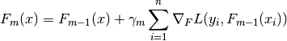
Where the step length 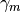 is chosen using line search:
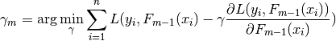
The algorithms for regression and classification only differ in the concrete loss function used.
1.11.4.5.1. Loss Functions¶
The following loss functions are supported and can be specified using
the parameter loss:
- Regression
- Least squares (
'ls'): The natural choice for regression due to its superior computational properties. The initial model is given by the mean of the target values.- Least absolute deviation (
'lad'): A robust loss function for regression. The initial model is given by the median of the target values.- Huber (
'huber'): Another robust loss function that combines least squares and least absolute deviation; usealphato control the sensitivity with regards to outliers (see [F2001] for more details).- Quantile (
'quantile'): A loss function for quantile regression. Use0 < alpha < 1to specify the quantile. This loss function can be used to create prediction intervals (see Prediction Intervals for Gradient Boosting Regression).- Classification
- Binomial deviance (
'deviance'): The negative binomial log-likelihood loss function for binary classification (provides probability estimates). The initial model is given by the log odds-ratio.- Multinomial deviance (
'deviance'): The negative multinomial log-likelihood loss function for multi-class classification withn_classesmutually exclusive classes. It provides probability estimates. The initial model is given by the prior probability of each class. At each iterationn_classesregression trees have to be constructed which makes GBRT rather inefficient for data sets with a large number of classes.- Exponential loss (
'exponential'): The same loss function asAdaBoostClassifier. Less robust to mislabeled examples than'deviance'; can only be used for binary classification.
1.11.4.6. Regularization¶
1.11.4.6.1. Shrinkage¶
[F2001] proposed a simple regularization strategy that scales
the contribution of each weak learner by a factor  :
:
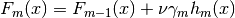
The parameter is also called the learning rate because
it scales the step length the the gradient descent procedure; it can
be set via the learning_rate parameter.
The parameter learning_rate strongly interacts with the parameter
n_estimators, the number of weak learners to fit. Smaller values
of learning_rate require larger numbers of weak learners to maintain
a constant training error. Empirical evidence suggests that small
values of learning_rate favor better test error. [HTF2009]
recommend to set the learning rate to a small constant
(e.g. learning_rate <= 0.1) and choose n_estimators by early
stopping. For a more detailed discussion of the interaction between
learning_rate and n_estimators see [R2007].
1.11.4.6.2. Subsampling¶
[F1999] proposed stochastic gradient boosting, which combines gradient
boosting with bootstrap averaging (bagging). At each iteration
the base classifier is trained on a fraction subsample of
the available training data. The subsample is drawn without replacement.
A typical value of subsample is 0.5.
The figure below illustrates the effect of shrinkage and subsampling on the goodness-of-fit of the model. We can clearly see that shrinkage outperforms no-shrinkage. Subsampling with shrinkage can further increase the accuracy of the model. Subsampling without shrinkage, on the other hand, does poorly.
Another strategy to reduce the variance is by subsampling the features
analogous to the random splits in RandomForestClassifier .
The number of subsampled features can be controlled via the max_features
parameter.
Note
Using a small max_features value can significantly decrease the runtime.
Stochastic gradient boosting allows to compute out-of-bag estimates of the
test deviance by computing the improvement in deviance on the examples that are
not included in the bootstrap sample (i.e. the out-of-bag examples).
The improvements are stored in the attribute
oob_improvement_. oob_improvement_[i] holds
the improvement in terms of the loss on the OOB samples if you add the i-th stage
to the current predictions.
Out-of-bag estimates can be used for model selection, for example to determine
the optimal number of iterations. OOB estimates are usually very pessimistic thus
we recommend to use cross-validation instead and only use OOB if cross-validation
is too time consuming.
1.11.4.7. Interpretation¶
Individual decision trees can be interpreted easily by simply visualizing the tree structure. Gradient boosting models, however, comprise hundreds of regression trees thus they cannot be easily interpreted by visual inspection of the individual trees. Fortunately, a number of techniques have been proposed to summarize and interpret gradient boosting models.
1.11.4.7.1. Feature importance¶
Often features do not contribute equally to predict the target response; in many situations the majority of the features are in fact irrelevant. When interpreting a model, the first question usually is: what are those important features and how do they contributing in predicting the target response?
Individual decision trees intrinsically perform feature selection by selecting appropriate split points. This information can be used to measure the importance of each feature; the basic idea is: the more often a feature is used in the split points of a tree the more important that feature is. This notion of importance can be extended to decision tree ensembles by simply averaging the feature importance of each tree (see Feature importance evaluation for more details).
The feature importance scores of a fit gradient boosting model can be
accessed via the feature_importances_ property:
>>> from sklearn.datasets import make_hastie_10_2
>>> from sklearn.ensemble import GradientBoostingClassifier
>>> X, y = make_hastie_10_2(random_state=0)
>>> clf = GradientBoostingClassifier(n_estimators=100, learning_rate=1.0,
... max_depth=1, random_state=0).fit(X, y)
>>> clf.feature_importances_
array([ 0.11, 0.1 , 0.11, ...
Examples:
1.11.4.7.2. Partial dependence¶
Partial dependence plots (PDP) show the dependence between the target response and a set of ‘target’ features, marginalizing over the values of all other features (the ‘complement’ features). Intuitively, we can interpret the partial dependence as the expected target response [1] as a function of the ‘target’ features [2].
Due to the limits of human perception the size of the target feature set must be small (usually, one or two) thus the target features are usually chosen among the most important features.
The Figure below shows four one-way and one two-way partial dependence plots for the California housing dataset:
One-way PDPs tell us about the interaction between the target response and the target feature (e.g. linear, non-linear). The upper left plot in the above Figure shows the effect of the median income in a district on the median house price; we can clearly see a linear relationship among them.
PDPs with two target features show the interactions among the two features. For example, the two-variable PDP in the above Figure shows the dependence of median house price on joint values of house age and avg. occupants per household. We can clearly see an interaction between the two features: For an avg. occupancy greater than two, the house price is nearly independent of the house age, whereas for values less than two there is a strong dependence on age.
The module partial_dependence provides a convenience function
plot_partial_dependence
to create one-way and two-way partial dependence plots. In the below example
we show how to create a grid of partial dependence plots: two one-way
PDPs for the features 0 and 1 and a two-way PDP between the two
features:
>>> from sklearn.datasets import make_hastie_10_2
>>> from sklearn.ensemble import GradientBoostingClassifier
>>> from sklearn.ensemble.partial_dependence import plot_partial_dependence
>>> X, y = make_hastie_10_2(random_state=0)
>>> clf = GradientBoostingClassifier(n_estimators=100, learning_rate=1.0,
... max_depth=1, random_state=0).fit(X, y)
>>> features = [0, 1, (0, 1)]
>>> fig, axs = plot_partial_dependence(clf, X, features)
For multi-class models, you need to set the class label for which the
PDPs should be created via the label argument:
>>> from sklearn.datasets import load_iris
>>> iris = load_iris()
>>> mc_clf = GradientBoostingClassifier(n_estimators=10,
... max_depth=1).fit(iris.data, iris.target)
>>> features = [3, 2, (3, 2)]
>>> fig, axs = plot_partial_dependence(mc_clf, X, features, label=0)
If you need the raw values of the partial dependence function rather
than the plots you can use the
partial_dependence function:
>>> from sklearn.ensemble.partial_dependence import partial_dependence
>>> pdp, axes = partial_dependence(clf, [0], X=X)
>>> pdp
array([[ 2.46643157, 2.46643157, ...
>>> axes
[array([-1.62497054, -1.59201391, ...
The function requires either the argument grid which specifies the
values of the target features on which the partial dependence function
should be evaluated or the argument X which is a convenience mode
for automatically creating grid from the training data. If X
is given, the axes value returned by the function gives the axis
for each target feature.
For each value of the ‘target’ features in the grid the partial
dependence function need to marginalize the predictions of a tree over
all possible values of the ‘complement’ features. In decision trees
this function can be evaluated efficiently without reference to the
training data. For each grid point a weighted tree traversal is
performed: if a split node involves a ‘target’ feature, the
corresponding left or right branch is followed, otherwise both
branches are followed, each branch is weighted by the fraction of
training samples that entered that branch. Finally, the partial
dependence is given by a weighted average of all visited leaves. For
tree ensembles the results of each individual tree are again
averaged.
Footnotes
| [1] | For classification with loss='deviance' the target
response is logit(p). |
| [2] | More precisely its the expectation of the target response after
accounting for the initial model; partial dependence plots
do not include the init model. |
Examples:
References
| [F2001] | (1, 2, 3) J. Friedman, “Greedy Function Approximation: A Gradient Boosting Machine”, The Annals of Statistics, Vol. 29, No. 5, 2001. |
| [F1999] |
|
| [HTF2009] |
|
| [R2007] |
|
1.11.5. VotingClassifier¶
The idea behind the voting classifier implementation is to combine conceptually different machine learning classifiers and use a majority vote or the average predicted probabilities (soft vote) to predict the class labels. Such a classifier can be useful for a set of equally well performing model in order to balance out their individual weaknesses.
1.11.5.1. Majority Class Labels (Majority/Hard Voting)¶
In majority voting, the predicted class label for a particular sample is the class label that represents the majority (mode) of the class labels predicted by each individual classifier.
E.g., if the prediction for a given sample is
- classifier 1 -> class 1
- classifier 2 -> class 1
- classifier 3 -> class 2
the VotingClassifier (with voting='hard') would classify the sample
as “class 1” based on the majority class label.
In the cases of a tie, the VotingClassifier will select the class based on the ascending sort order. E.g., in the following scenario
- classifier 1 -> class 2
- classifier 2 -> class 1
the class label 1 will be assigned to the sample.
1.11.5.1.1. Usage¶
The following example shows how to fit the majority rule classifier:
>>> from sklearn import datasets
>>> from sklearn import cross_validation
>>> from sklearn.linear_model import LogisticRegression
>>> from sklearn.naive_bayes import GaussianNB
>>> from sklearn.ensemble import RandomForestClassifier
>>> from sklearn.ensemble import VotingClassifier
>>> iris = datasets.load_iris()
>>> X, y = iris.data[:, 1:3], iris.target
>>> clf1 = LogisticRegression(random_state=1)
>>> clf2 = RandomForestClassifier(random_state=1)
>>> clf3 = GaussianNB()
>>> eclf = VotingClassifier(estimators=[('lr', clf1), ('rf', clf2), ('gnb', clf3)], voting='hard')
>>> for clf, label in zip([clf1, clf2, clf3, eclf], ['Logistic Regression', 'Random Forest', 'naive Bayes', 'Ensemble']):
... scores = cross_validation.cross_val_score(clf, X, y, cv=5, scoring='accuracy')
... print("Accuracy: %0.2f (+/- %0.2f) [%s]" % (scores.mean(), scores.std(), label))
Accuracy: 0.90 (+/- 0.05) [Logistic Regression]
Accuracy: 0.93 (+/- 0.05) [Random Forest]
Accuracy: 0.91 (+/- 0.04) [naive Bayes]
Accuracy: 0.95 (+/- 0.05) [Ensemble]
1.11.5.2. Weighted Average Probabilities (Soft Voting)¶
In contrast to majority voting (hard voting), soft voting returns the class label as argmax of the sum of predicted probabilities.
Specific weights can be assigned to each classifier via the weights
parameter. When weights are provided, the predicted class probabilities
for each classifier are collected, multiplied by the classifier weight,
and averaged. The final class label is then derived from the class label
with the highest average probability.
To illustrate this with a simple example, let’s assume we have 3 classifiers and a 3-class classification problems where we assign equal weights to all classifiers: w1=1, w2=1, w3=1.
The weighted average probabilities for a sample would then be calculated as follows:
| classifier | class 1 | class 2 | class 3 |
|---|---|---|---|
| classifier 1 | w1 * 0.2 | w1 * 0.5 | w1 * 0.3 |
| classifier 2 | w2 * 0.6 | w2 * 0.3 | w2 * 0.1 |
| classifier 3 | w3 * 0.3 | w3 * 0.4 | w3 * 0.3 |
| weighted average | 0.37 | 0.4 | 0.3 |
Here, the predicted class label is 2, since it has the highest average probability.
The following example illustrates how the decision regions may change when a soft VotingClassifier is used based on an linear Support Vector Machine, a Decision Tree, and a K-nearest neighbor classifier:
>>> from sklearn import datasets
>>> from sklearn.tree import DecisionTreeClassifier
>>> from sklearn.neighbors import KNeighborsClassifier
>>> from sklearn.svm import SVC
>>> from itertools import product
>>> from sklearn.ensemble import VotingClassifier
>>> # Loading some example data
>>> iris = datasets.load_iris()
>>> X = iris.data[:, [0,2]]
>>> y = iris.target
>>> # Training classifiers
>>> clf1 = DecisionTreeClassifier(max_depth=4)
>>> clf2 = KNeighborsClassifier(n_neighbors=7)
>>> clf3 = SVC(kernel='rbf', probability=True)
>>> eclf = VotingClassifier(estimators=[('dt', clf1), ('knn', clf2), ('svc', clf3)], voting='soft', weights=[2,1,2])
>>> clf1 = clf1.fit(X,y)
>>> clf2 = clf2.fit(X,y)
>>> clf3 = clf3.fit(X,y)
>>> eclf = eclf.fit(X,y)

1.11.5.3. Using the VotingClassifier with GridSearch¶
The VotingClassifier can also be used together with GridSearch in order to tune the hyperparameters of the individual estimators:
>>> from sklearn.grid_search import GridSearchCV
>>> clf1 = LogisticRegression(random_state=1)
>>> clf2 = RandomForestClassifier(random_state=1)
>>> clf3 = GaussianNB()
>>> eclf = VotingClassifier(estimators=[('lr', clf1), ('rf', clf2), ('gnb', clf3)], voting='soft')
>>> params = {'lr__C': [1.0, 100.0], 'rf__n_estimators': [20, 200],}
>>> grid = GridSearchCV(estimator=eclf, param_grid=params, cv=5)
>>> grid = grid.fit(iris.data, iris.target)
1.11.5.3.1. Usage¶
In order to predict the class labels based on the predicted
class-probabilities (scikit-learn estimators in the VotingClassifier
must support predict_proba method):
>>> eclf = VotingClassifier(estimators=[('lr', clf1), ('rf', clf2), ('gnb', clf3)], voting='soft')
Optionally, weights can be provided for the individual classifiers:
>>> eclf = VotingClassifier(estimators=[('lr', clf1), ('rf', clf2), ('gnb', clf3)], voting='soft', weights=[2,5,1])